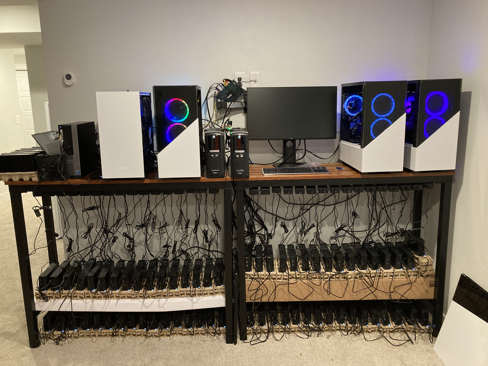
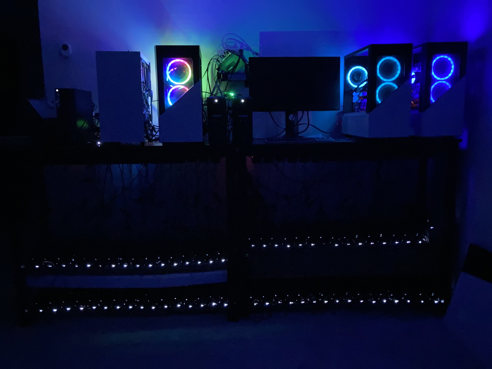

My chia farming rig
This is a short but very interesting project. I’ve worked intensively for 3 weeks on it and it’s giving me a side income very fast, due to the value of the coin is about $1.000 right now even when it was listed for the first time on an exchange just a few days ago. It’s a very new coin and it looks promising. Maybe something like BTC 7-8 years ago.
This project is getting a lot of traction, maybe because of its creator: Bram Cohen known as BitTorrent protocol creator (P2P). Another good reason is that it’s using new technology to generate the coins, called Proof of Space, which is using hard drive space instead of brute force calculations so it’s using a lot of less energy compared to the rest of the coins like BTC or ETH. You can check this website for more details.
You can check the source code of chia-blockchain in its GitHub repository. The coin has a very active community on Keybase. Also you can interact in side-communities like: Reddit or ChiaForum.
Basically to “farm” chia, the process is divided into two steps which can be done with the same computer or in separated one in a network. The first process is called plotting and it’s the creation of the plot. A plot is about 100GB file (if you use k=32) which is generated with a powerful computer. This process needs a computer with a fast CPU (8-cores should be good) and a super-fast SSD called NVME which should be the most expensive part of this. This disk should have a very high TBW (Total Bytes Written) to be able to work longer. When you generate a 100GB plot, this disk is generating about 2-3TB of space written so this process can kill a disk with a low TBW in few days.
For this rig, the RAM should be 32GB, and the speed of that is not important. If you want to see a reference plotter machine you can visit this website. My first plotter machine is the same show here, next three machines I bought from an ETH miner who took off the graphic card. I added 16GB RAM additional, bought the NVME disk and I got a used cheap graphic card just to start the computer.
You can get a very powerful and expensive machine getting between 3-9 TB/Day or 30-90 plots/day (approximately) but in the end, if you are looking for the inflection point or the lowest $TiB/day, you can get it with a 500 USD machine like this but if you have 10 of these machines, for example, you should always consider the electricity bill.
The second stage is the farming, where can be done in a separated a very low resource machine, like a Raspberry Pi or Rock Pi and it just needs to keep the hard disks, full of plots, connected through USB using a 16-Port USB Hub like this aand just wait to get a coin. While more plots you have, more chances to win but it depends on the size of the entire network, which is growing exponentially so in my case, my odds to win are close to 2 XCH (You receive 2 XCH every time you win) every 8 days. You always can simulate this on the link.
So, these are pictures of my rig. One picture is from the day and another one at the night. At night is easier to check if one USB disk is turned off.


In this system, I have a lot of 8TB USB disks which is not optimal on space, heat, and electricity but I did it because the prices of SATA disk went up a lot, so it was the best solution I found to have a big farm.
Now you can see the details of the rig I’ve created:
5 plotters machines: 4 of them are very similar with 8 core CPU and 32 RAM and the one on the left is a 500 USD experiment which is giving me about 12 plots daily (https://chianetwork.blogspot.com/2021/04/build-install-guide-budget-plotting.html). The three of the right I got them from an ETH miner who bought them to take off the credit card. So I was very lucky to find this guy with a complimentary hobby. I got them for about 700 USD each and I needed to buy the NVME disks, 16GB more RAM, and very cheap graphics cards just to start the machines, because I manage them using SSH.
70x 8TB Seagate from Costco. I got them for 120 USD each and I was lurking several Costco places and doing experiments to buy them fast. There was an online limit of 3 units so I bought them all from the stores. Fortunately in Utah, I didn’t have a lot of competition and there were plenty of disks in any Costco place I visited. The Costco URL is not working anymore but as a reference, this is the disk.
SATA Disks: I got 1x18TB, 1x16TB, 4x14TB Seagate Exos disks. I got them previously the prices went up. For example I bought the 18TB one at 399 USD. 18 TB Link. diskprices.com is a good place to check HDD prices. As a reference, my 8TB disks were 15 USD/TB.
NVME disks: 1x 4GB, 2x 2GB, 2x 1GB and 2x512GB. I did some experiments trying to figure out what is the best combination. Until now the best result I got it from the 1 TB disks using RAID 0.
Some NVME PCI adapters. Some motherboards I have only have one of these ports. These double ones work pretty good Amazon Link.
Two Mr ironstone bar table 47’’ tables and 4 Long heavy-duty power strip 16 from Amazon. I put them together because I was extremely lucky that the size of them is almost the same, so it was very easy to put the strip under the tables. Table link and Strip link.
Two UPS Cyberpower 1500 VA from BestBuy. The UPS I had collapsed when I connected the 3er outlet and I needed to buy these very fast, so I got them from a near Best Buy store as the extension wires. Best Buy link.
8x USB 3.0 extension cables: The second row of 32 disks which is at the floor can’t reach the computer at the top so I needed these extension cables. Link. You can get cheapest ones in Amazon. I needed to buy them because I need them now because my trip.
TP-Link Gigabit Switch with CAT7 wires: Nothing to add here. Just plug & play. It’s very cheap. Amazon Link Switch and Amazon Link wires.
My initial plan was to have separated the plotters from the farmers. I have 2 rock pi 4A machines for that, but the 16x USB I had for that failed, and because of my trip, I had to move fast and I finished with this. In my return, if I’d buy more disks I’ll try again probably with this separation.
About the total size, it is about: 570 + 18 + 16 + 4*14 = 650TB but not 100% of the space is usable so it’d be around 600TB total and I’m able to generate about 5500 plots.
I’m using right now one of these Rock Pi 4 to access the plotters, using it as a bastion host with fail2ban to limit hacking attempts. I have a gigabit router for communication and I’m using CAT6 wires but I couldn’t get any improvement compared to a normal cable.
I’m getting about 70-80 plots daily with this setup and I invested around 16K in all of that. I hope to optimize it a little bit and getting 90-100 plots daily but having only 600TB (I’ve done 60TB previous to the trip), if it’s going too fast it’ll fill the disks previous to my return so I hope to come back around the same day when all the disks are full. Also, chia is releasing a new version soon to allow pools, so it’s possible to have to re-create the plots so if my disks are done while I’m out, I’ll consider this alternative but always the idea is to have the biggest amount of plots available.
This is my first experience doing something like that with “real hardware”. I’ve built my computers all my life but nothing compared to this. Also, the total price is the sum of all my previous rigs together.
Finally working as a DevOps Engineer I’ve good experience managing Linux as a sysadmin, creating scripts and automation. But even that it was very good to have living practice dealing with formatting, mounting disks, learning about NVME, and checking temperatures in an intense environment.